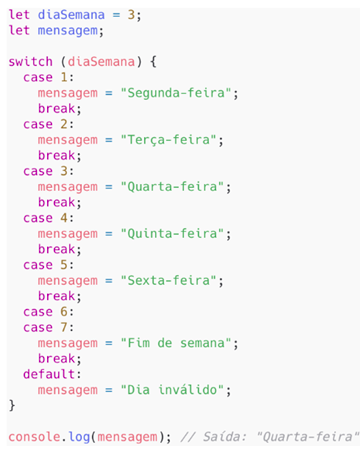

JavaScript
Hoisting
Move declarações para o topo do escopo.
// VAR
console.log(minhaVar); // undefined
var minhaVar = "Hello";
// LET
// console.log(minhaLet); // ReferenceError
let minhaLet = "Hello Let";
// FUNÇÃO
saudar(); // Olá!
function saudar() {
console.log("Olá!");
}
var vs let
- var → escopo de função, sofre hoisting
- let → escopo de bloco, não acessível antes da declaração
BigInt
let numeroGrande = 9007199254740991n;
Arrays
- push() → adiciona no final
- pop() → remove último
- unshift() → adiciona no início
- shift() → remove primeiro
Switch

switch(valor) {
case 1:
break;
default:
}
Underscore em números
let numero = 1_000_000;
React
Utiliza Virtual DOM para otimizar atualização da interface.
XML
Extensible Markup Language
Armazenamento e transporte estruturado de dados.
DTD
- + → uma ou mais vezes
- * → zero ou mais
- ? → no máximo uma vez
XSD
Tipagem forte: int, string, boolean.
XQuery
- Case sensitive
- Extensões: .xq, .xquery, .xqm
- Usa XPath
- FLWOR (For, Let, Where, Order by, Return)
XHTML
Mesmas tags do HTML, porém mais rigoroso.
Angular
- Framework criado pelo Google
- SPA (Single Page Application)
- Arquitetura baseada em componentes
- Programação reativa
AngularJS (2010)
- JavaScript puro
- MVC
Angular (2016)
- TypeScript
- Componentes e Serviços
Arquitetura
- Componentes
- Módulos
- Serviços
- Injeção de Dependência (DI)
Router
- <router-outlet> → área de exibição da rota
- routerLink → navegação
NodeJS
Ambiente backend JavaScript.
Bootstrap
Framework front-end responsivo e mobile-first.
Grid System
- Baseado em 12 colunas
- .container / .container-fluid
- .row
- .col-*
Breakpoints
- col-*
- col-sm-*
- col-md-*
- col-lg-*
- col-xl-*
Alinhamento
- text-start
- text-center
- text-end
Margem e Padding
- m-*, p-*
- mt, mb, ms, me
- mx, my
Cores - classes de fundo

Botões
- .btn
- .btn-lg
- .btn-sm
Alert
.alert .alert-*
Display
- d-none
- d-block
- d-inline
- d-flex
Outros
- .rounded-circle
- Collapse (data-toggle="collapse")
- Navbar
- Spinners
- Tooltips
REST
Representational State Transfer
Métodos HTTP
| Método | Idempotente | Seguro |
|---|---|---|
| GET | Sim | Sim |
| POST | Não | Não |
| PUT | Sim | Não |
| DELETE | Sim | Não |
Status Codes
- 201 Created → correto ao criar recurso
- 200 OK → resposta genérica
- 204 No Content → sem conteúdo
- 202 Accepted → processamento assíncrono
- 409 Conflict → conflito
Princípios REST
- Interface uniforme
- Stateless
- Cacheável
- Sistema em camadas
- Código sob demanda (opcional)
OpenAPI (Swagger)
Ferramenta para documentar APIs RESTful.
SOAP
Protocolo baseado em XML para serviços web.
JWT
JSON Web Token → padrão para autenticação baseada em token.